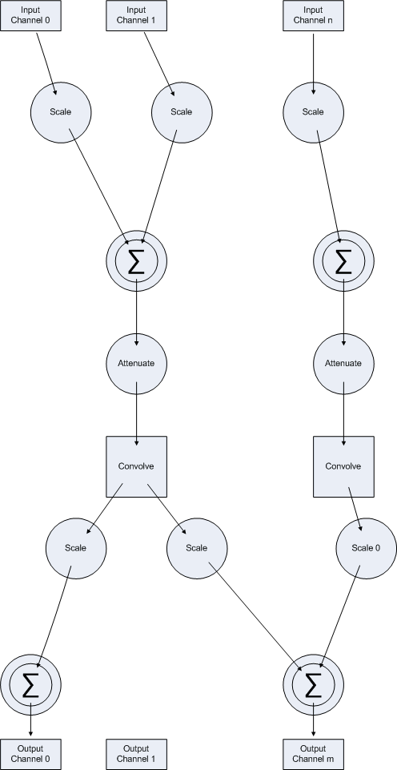

|
| |
 For
the simplest applications, you can just
use a sound file as a filter.
A config file allows you to specify more complex filters for specific applications.
The following is the format for version 3.0 and later.
Filter specification
A config file is a plain text file describing a filter by specifying:
- the filter sample rate in Hz (eg, 44100 or 48000)
- the number of input and output channels being supplied and accepted by your
setup (so 1 for mono, 2 for stereo, 6 for 5.1, etc).
- a channel to speaker mapping specification
- the delays to be applied to each input and output channels (in milliseconds)
- a list of the paths that comprise the filter:
Path
A filter path is specified in terms of:
- a filter file (impulse response file, of
one of the supported sound file types
such as WAV) that must be of the specified filter sample rate. All the
filter files in the list of filter paths must be of the same length;
- the channel from that filter file to be used (0 for the first channel,
1 for the second, etc);
- the input channels that the filter path is to use. Typically,
a filter path will use just a single input channel, but it is possible for more
than one channel to be specified, in which case they are scaled and summed to
provide an aggregated input channel for the filter path;
- the output channels that the filter path is to use. Again, this will
typically be a single channel, but the output will be scaled and copied to all
channel is specified for the filter path. If a particular output channel
is specified as the output channel for more than one filter path, the (scaled)
outputs are summed.
Config file syntax
More specifically, the config file, which is a text file that specifies:
- the sample rate, number of input and output channels being supplied
and accepted by your setup, and a channel to speaker mapping specification
(on the initial line):
<filter sample rate> <number of input channels> <number of output channels> <output channel mask (hex)>
where
- <filter sample rate>:
- will normally be 44100 for CDs or 48000 for DVDs
- <number of ... channels>:
- The number of input and output channels will typically be the same for
straight room correction playback, but may be different if you are setting
up a cross-over that filters different frequency ranges to different channels,
for example.
- If the number of input / output channels that you specify here does
not correspond to the number of channels that you are playing, or the number
of channels that your output device expects, the filter may block playback,
or not be applied. A little logo (
 )
will appear on the bottom of the Windows Media Player screen if Convolver
is active. )
will appear on the bottom of the Windows Media Player screen if Convolver
is active.
- Look under Tools | Options | Devices | Speakers | Properties | Advanced
to specify the number of speakers / output channels. The HCCD / 24-bit
setting on that tab has been reported to disable playback through the filter
under some circumstances. However, you need not use all the input and output
channels available on your system in the filter paths that you will go on
to specify.
- <output channel mask>:
- This setting will often be 0, but can be used to indicate which channels
are present in the multi-channel output stream (in terms of speakers). It
is specified in hexadecimal (but without any 0x prefix). The least-significant
bit represents the front-left speaker, the next bit corresponds to the front-right
speaker, and so on. The channels that are specified in the channel mask
should be present in the order shown in the following table, beginning at
the top:
-
Speaker
position |
Bit (hex) |
Speaker
position |
Bit (hex) |
|
front left |
1 |
side left |
200 |
|
front right |
2 |
side right |
400 |
|
front centre |
4 |
top centre |
800 |
|
low frequency |
8 |
top front left |
1000 |
|
back left |
10 |
top front centre |
2000 |
|
back right |
20 |
top front right |
4000 |
|
front left of centre |
40 |
top back left |
8000 |
|
front right of centre |
80 |
top back centre |
10000 |
|
back centre |
100 |
top back right |
20000 |
- For example, if <number of output channels>
is set to 4 and <output channel mask> is
set to 33, the audio channels are intended for playback to the front-left,
front-right, back-left, and back-right speakers. Other common values to
try include 3F for 5.1, and FF or 63F for 7.1 playback.
- An <output channel mask> of 0 tells
the output audio device to render the first channel to the first port on
the device, the second channel to the second port on the device, and so
on. You should probably use a 0 value by default, since you can specify
which output channel numbers are to be used directly in the config file
through <output channel>n.<weight>n
settings.
- See
Multiple
Channel Audio Data and WAVE Files and even
Audio Driver Support for Home Theater Speaker Configurations for the
gory details (which vary slightly between different versions of XP)
- following by a line setting delays, in milliseconds, to be applied
to each input and output channel
<input channel delay>0 ... <input channel delay>n <output channel delay>0 ... <output channel delay>m
Start with a rows of zeros. The delay cannot exceed half the partition
length. So if you are using a 44.1kHz and a filter that is 131072 taps
long, for example, you cannot delay by more than 1486ms (131072 / 44.1 / 2)
if you use 0 or 1 partitions, or 371ms if you are using 4 partitions.
This should not be a practical constraint unless you live in a football stadium
or are doing special effects.
- followed by a sequence of 4-line filter path specifications each
comprising the filter (impulse response) file, the channel to be used from that
IR file, the input and output channels that the filter path uses, and how the
inputs and outputs are to be scaled:
<filter filename>
<filter channel>
<input channel>0.<weight>0 ... <input channel>n.<weight>n
<output channel>0.<weight>0 ... <output channel>m.<weight>m
where
- <filter filename>:
- a filter (impulse response) file. Convolver
will read any format supported by
libsndfile. However,
you will probably want to stick to WAV files. Raw .PCM (or .pcm) files
are assumed to be mono 32-bit float files. All the filters for in a filter
path specification must be the same length.
- Impulse response filters for room correction can be generated by
RecImp or by following the excellent
Jones Rush
User Guide.
- If you want to generate filters for other applications, you will need
to look elsewhere. For example, you might want to
generate
digital cross-overs or
cross-talk
cancellation filters or
DAFX - Digital Audio Effects.
- <filter channel>:
- specifies the channel (staring at 0) from the filter file to
be used for this filter path. There are many stereo impulse response
files available on the internet. Since each filter path uses only
a single channel, this feature allow you to use the left and right (0 and
1) channels from these impulse response files in two separate filter paths,
for example.
- <channel>:
- channel numbers start at 0. A filter path does not have to use all the
source channels as input. Output channels that have no filter path
associated with them will be fed with silence.
- <scale>:
- scaling factors are applied to the samples from each input channel and,
after processing, to the resulting samples for each specified output channel.
A scaling factor of 0 implies no scaling (ie, a scaling factor of 1). Negative
scaling factors are allowed (which will result in phase inversion).
For straight inversion, don't use -0.0 for channel 0; use -0.99999 instead.
The examples should make this clearer.
Filter list
In situations where you are using several different formats (eg, stereo 44.1kHz
and 5.1 48kHz) it is convenient to be able to switch automatically between filters.
So a config file can also comprise of a list of
- filter specification config file names of the type described above; and
- WAV impulse response filenames
one per line. The filter used will then be the first to match the current
sound source (in terms of number of input and output channels and sample rate).
This allows you to play both stereo and 5.1 sources, say, without having to change
the config file.
|